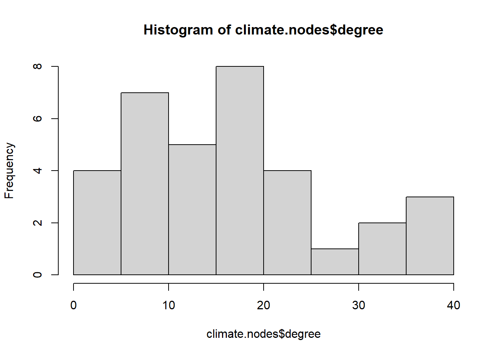
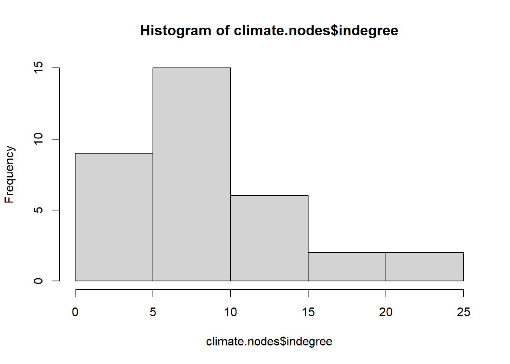
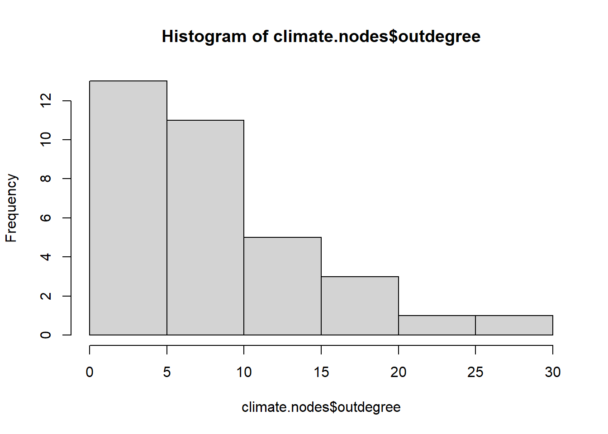

This is the Swiss climate policy network, which has 34 vertices and 291 edges. 65 dyads are mutual and 161 are asymmetric. There are 158 triads with 3 edges, and 787 triads with 2 edges.
Compute the many measures of degree of the network of your choice, most preferably directed. Create a data frame called nodes where each row corresponds to a node and each column to an attribute of the node, namely the id, name or label, and different measures of degree: total, out-degree, and in-degree. What is the average degree of the network?
Compute the distributions of those measures (or histograms if your network is small). What does this tell us about the structure of the network?
Code
hist(climate.nodes$degree)

Code
hist(climate.nodes$indegree)

Code
hist(climate.nodes$outdegree)

Code
summary(climate.nodes)
name degree indegree outdegree
Length:34 Min. : 2.00 Min. : 0.000 Min. : 0.000
Class :character 1st Qu.:10.00 1st Qu.: 5.250 1st Qu.: 3.000
Mode :character Median :16.50 Median : 7.500 Median : 8.000
Mean :17.12 Mean : 8.559 Mean : 8.559
3rd Qu.:21.00 3rd Qu.:11.000 3rd Qu.:11.000
Max. :40.00 Max. :22.000 Max. :29.000
Most of the vertices in the network have a low degree.
Density
Compute the density of the network. Is this a global or local measure? Does it have a relationship with average degree?
Code
network.density(climate.net)
[1] 0.2593583
The density is .259, is a global measure and it does have a relationship with average degree, because it is a measure of the existing edges out of all the possible edges.
Random Network
Create a random (Erdos-Renyi) network with the same number of nodes and edges than the network of your choice. On igraph, the necessary commands are random.graph.game(n, p.or.m, type = c("gnp", "gnm"), directed = FALSE, loops = FALSE) (deprecated), sample_gnp(n, p, directed = FALSE, loops = FALSE) or sample_gnm(n, m, directed = FALSE, loops = FALSE). The p.or.m argument is to specify the probability of an edge \(p\) or the number of edges \(m\).
Compare the densities, dyad and triad censuses, and degree distributions, with the measures of the network of your choice. Does the comparison us something about the network of your choice?
The Swiss climate policy network has a long right tail when it comes to total degree and it is less dense and there are more complete triads compared to the randomly generated graph.
Source Code
---title: "Week 3 Challenge"author: "Ben Ramsey"description: "Degree and Density of a Network"date: "03/06/2023"format: html: toc: true code-fold: true code-copy: true code-tools: true# editor: visualcategories: - challenge_3 # - railroads # - faostat # - wildbirds---```{r}#| label: setup#| include: falselibrary(tidyverse)library(igraph)library(statnet)library(GGally)```## Challenge OverviewDescribe the many measures of degree, as well as density, of a network and compare ## Degree```{r}climate <-read.csv("_data/climate0205-allop.csv", sep =";") %>%subset(select =-c(X))climate.ig <-graph_from_adjacency_matrix(as.matrix(climate), weighted =TRUE, mode ="directed", add.rownames =TRUE)climate.net <-as.network(as.matrix(climate), directed =TRUE, weighted =TRUE)ggnet2(climate.net, label =colnames(climate))```If you have not done it before, evaluate the structure of the network (number of edges and vertices, dyad and triad census, etc.).```{r}print(climate.net)dyad.census(climate.net)triad.census(climate.net, mode ="graph")```This is the Swiss climate policy network, which has 34 vertices and 291 edges. 65 dyads are mutual and 161 are asymmetric. There are 158 triads with 3 edges, and 787 triads with 2 edges. Compute the many measures of _degree_ of the network of your choice, most preferably directed. Create a data frame called `nodes` where each row corresponds to a node and each column to an attribute of the node, namely the id, name or label, and different measures of degree: total, out-degree, and in-degree. What is the average degree of the network?```{r}climate.nodes =data.frame(name = climate.net %v%"vertex.names", degree =degree(climate.net), indegree =degree(climate.net, cmode ="indegree"), outdegree =degree(climate.net, cmode ="outdegree"))mean(climate.nodes$degree)```The average degree is 17.12. Compute the distributions of those measures (or histograms if your network is small). What does this tell us about the structure of the network?```{r}hist(climate.nodes$degree)hist(climate.nodes$indegree)hist(climate.nodes$outdegree)summary(climate.nodes)```Most of the vertices in the network have a low degree. ## DensityCompute the density of the network. Is this a global or local measure? Does it have a relationship with average degree?```{r}network.density(climate.net)```The density is .259, is a global measure and it does have a relationship with average degree, because it is a measure of the existing edges out of all the possible edges. ## Random NetworkCreate a random (Erdos-Renyi) network with the same number of nodes and edges than the network of your choice. On `igraph`, the necessary commands are `random.graph.game(n, p.or.m, type = c("gnp", "gnm"), directed = FALSE, loops = FALSE)` (deprecated), `sample_gnp(n, p, directed = FALSE, loops = FALSE)` or `sample_gnm(n, m, directed = FALSE, loops = FALSE)`. The `p.or.m` argument is to specify the probability of an edge $p$ or the number of edges $m$.Compare the densities, dyad and triad censuses, and degree distributions, with the measures of the network of your choice. Does the comparison us something about the network of your choice? ```{r}set.seed(1)random.ig <-sample_gnm(34, 291)dyad_census(random.ig)triad_census(random.ig)edge_density(random.ig)random.nodes <-data.frame(degree = igraph::degree(random.ig))hist(random.nodes$degree)```The Swiss climate policy network has a long right tail when it comes to total degree and it is less dense and there are more complete triads compared to the randomly generated graph.